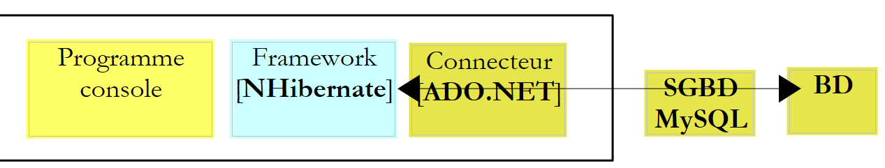
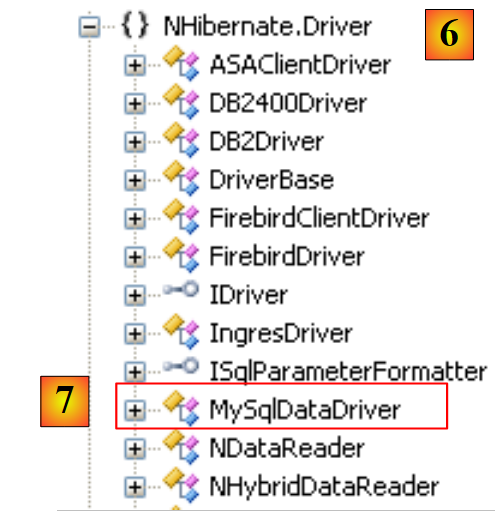

6. Introduction to the NHibernate ORM
This chapter is a brief introduction to NHibernate, the .NET equivalent of the Java Hibernate framework. For a comprehensive introduction, see:
Title: NHibernate in Action, Author: Pierre-Henri Kuaté, Publisher: Manning, ISBN-13: 978-1932394924
An ORM (Object Relational Mapper) is a set of libraries that allows a program using a database to operate on it without issuing explicit SQL commands and without knowing the specifics of the DBMS being used.
Prerequisites
On a scale of [beginner-intermediate-advanced], this document falls into the [intermediate] category. Understanding it requires various prerequisites that can be found in some of the documents I have written:
- C# 2008: [Learning C# Version 3.0 with the .NET 3.5 Framework]
- [Spring IoC], available at the URL [Spring IoC for .NET]. Presents the basics of Inversion of Control (IoC) or Dependency Injection (DI) in the Spring.NET framework [Spring.NET | Homepage].
Reading recommendations are sometimes provided at the beginning of paragraphs in this document. They reference the previous documents.
Tools
The tools used in this case study are freely available on the web. They are as follows (December 2011):
- Nhibernate 3.2 available at [http://nhforge.org/Default.aspx]
- Spring.net 1.3.2 available at the URL [http://www.springframework.net]. The Spring.net framework is very comprehensive. Here, we will use only the library it provides to facilitate the use of the Nhibernate framework.
- Log4net 1.2.10 available at [http://logging.apache.org/log4net]. This logging framework is used by Nhibernate.
- NUnit 2.5, available at [http://www.nunit.org/]. This unit testing framework is the .NET equivalent of the JUnit framework for the Java platform.
- The ADO.NET 6.4.4 driver for the MySQL 5 DBMS is available at [http://dev.mysql.com/downloads/connector/net]
All DLLs required for Visual Studio 2010 projects have been compiled into a folder [libnet4]:
 |
6.1. The Role of NHIBERNATE in a Layered .NET Architecture
A .NET application using a database can be structured in layers as follows:
 |
The [DAO] layer communicates with the DBMS via the ADO.NET API (see section 3.3). In the previous architecture, the [ADO.NET] connector is linked to the DBMS. Thus, the class implementing the [IDbConnection] interface is:
- the [MySQLConnection] class for the MySQL DBMS
- the [SQLConnection] class for the SQLServer DBMS
The [DAO] layer is thus dependent on the DBMS used. Certain frameworks (Linq, iBatis.net, NHibernate) remove this constraint by adding an additional layer between the [DAO] layer and the [ADO.NET] connector of the DBMS in use. Here, we will use the [NHibernate] framework.
 |
In the diagram above, the [DAO] layer no longer communicates with the [ADO.NET] connector but with the NHibernate framework, which provides it with an interface independent of the [ADO.NET] connector used. This architecture allows you to switch DBMSes without changing the [DAO] layer. Only the [ADO.NET] connector needs to be changed.
6.2. The sample database
To demonstrate how to work with NHibernate, we will use the following MySQL database [dbpam_nhibernate] described in Section 3.1. Exporting the database structure to an SQL file yields the following result:
Note that in lines 6, 20, and 36, the primary keys ID have the *<a id="autoincrement"></a> * attribute set to *autoincrement*. This means that MySQL will automatically generate the primary key values whenever a new record is added. The developer does not need to worry about this.
6.3. The C# Demo Project
To introduce the configuration and use of NHibernate, we will use the following architecture:
 |
A console program [1] will manipulate data from the database [2] via the [NHibernate] framework [3]. This will lead us to present:
- the NHibernate configuration files
- the NHibernate API
The C# project will be as follows:
 |
The elements required for the project are as follows:
- in [1], the DLLs required by the project:
- [NHibernate]: the NHibernate framework DLL
- [MySql.Data]: the DLL for the MySQL DBMS ADO.NET connector
- [log4net]: the Log4net framework DLL for generating logs
- in [2], the classes representing the database tables
- in [3], the [App.config] file that configures the entire application, including the [NHibernate] framework
- in [4], test console applications
6.3.1. Configuring the database connection
Let’s return to the test architecture:
 |
As shown above, [NHibernate] must be able to access the database. To do so, it requires certain information:
- the DBMS that manages the database (MySQL, SQL Server, Postgres, Oracle, etc.). Most DBMSs have added their own extensions to the SQL language. By knowing the DBMS, NHibernate can adapt the SQL statements it issues to that specific DBMS. NHibernate uses the concept of SQL dialects.
- the database connection parameters (database name, username of the connection owner, and password)
This information can be placed in the [App.config] configuration file. Here is the one that will be used with a MySQL 5 database:
<?xml version="1.0" encoding="utf-8" ?>
<configuration>
<!-- configuration sections -->
<configSections>
<section name="log4net" type="log4net.Config.Log4NetConfigurationSectionHandler,log4net" />
<section name="hibernate-configuration" type="NHibernate.Cfg.ConfigurationSectionHandler, NHibernate" />
</configSections>
<!-- NHibernate configuration -->
<hibernate-configuration xmlns="urn:nhibernate-configuration-2.2">
<session-factory>
<property name="connection.provider">NHibernate.Connection.DriverConnectionProvider</property>
<!--
<property name="connection.driver_class">NHibernate.Driver.MySqlDataDriver</property>
-->
<property name="dialect">NHibernate.Dialect.MySQL5Dialect</property>
<property name="connection.connection_string">
Server=localhost;Database=dbpam_nhibernate;Uid=root;Pwd=;
</property>
<property name="show_sql">false</property>
<mapping assembly="pam-nhibernate-demos"/>
</session-factory>
</hibernate-configuration>
<!-- This section contains the log4net configuration settings -->
<!-- IMPORTANT NOTE: Logging is not enabled by default. It must be enabled programmatically using the instruction log4net.Config.XmlConfigurator.Configure();
! -->
<log4net>
<!-- Define an output appender (where the logs can go) -->
<appender name="LogFileAppender" type="log4net.Appender.FileAppender, log4net">
<param name="File" value="log.txt" />
<param name="AppendToFile" value="false" />
<layout type="log4net.Layout.PatternLayout, log4net">
<param name="ConversionPattern" value="%d [%t] %-5p %c [%x] <%X{auth}> - %m%n" />
</layout>
</appender>
<appender name="LogDebugAppender" type="log4net.Appender.DebugAppender, log4net">
<layout type="log4net.Layout.PatternLayout, log4net">
<param name="ConversionPattern" value="%d [%t] %-5p %c [%x] <%X{auth}> - %m%n"/>
</layout>
</appender>
<appender name="ConsoleAppender" type="log4net.Appender.ConsoleAppender, log4net">
<layout type="log4net.Layout.PatternLayout, log4net">
<param name="ConversionPattern" value="%d [%t] %-5p %c [%x] <%X{auth}> - %m%n"/>
</layout>
</appender>
<!-- Set up the root category, set the default priority level, and add the appender(s) (where the logs will go) -->
<root>
<priority value="INFO" />
<!--
<appender-ref ref="LogFileAppender" />
<appender-ref ref="LogDebugAppender"/>
-->
<appender-ref ref="ConsoleAppender"/>
</root>
<!-- Specify the level for some specific namespaces -->
<!-- Level can be: ALL, DEBUG, INFO, WARN, ERROR, FATAL, OFF -->
<logger name="NHibernate">
<level value="INFO" />
</logger>
</log4net>
</configuration>
- Lines 4–7: define configuration sections in the [App.config] file. Consider line 6:
<section name="hibernate-configuration" type="NHibernate.Cfg.ConfigurationSectionHandler, NHibernate" />
This line defines the NHibernate configuration section in the [App.config] file. It has two attributes: name and type.
- The [name] attribute names the configuration section. This section must be delimited by the <name>...</name> tags, in this case <hibernate-configuration>...</hibernate-configuration> on lines 11–24.
- The [type=class,DLL] attribute specifies the name of the class responsible for handling the section defined by the [name] attribute, as well as the DLL containing that class. Here, the class is named [NHibernate.Cfg.ConfigurationSectionHandler] and is located in the [NHibernate.dll] DLL. Recall that this DLL is one of the project’s references.
Now let’s look at the NHibernate configuration section:
<!-- NHibernate configuration -->
<hibernate-configuration xmlns="urn:nhibernate-configuration-2.2">
<session-factory>
<property name="connection.provider">NHibernate.Connection.DriverConnectionProvider</property>
<!--
<property name="connection.driver_class">NHibernate.Driver.MySqlDataDriver</property>
-->
<property name="dialect">NHibernate.Dialect.MySQL5Dialect</property>
<property name="connection.connection_string">
Server=localhost;Database=dbpam_nhibernate;Uid=root;Pwd=;
</property>
<property name="show_sql">false</property>
<mapping assembly="pam-nhibernate-demos"/>
</session-factory>
</hibernate-configuration>
- Line 2: The NHibernate configuration is contained within a <hibernate-configuration> tag. The xmlns (XML Namespace) attribute specifies the version used to configure NHibernate. Over time, the way NHibernate is configured has evolved. Here, version 2.2 is used.
- Line 3: The entire NHibernate configuration is contained within the <session-factory> tag (lines 3 and 14). An NHibernate session is the tool used to work with a database according to the schema:
- open session
- working with the database using NHibernate API methods
- close session
The session is created by a factory, a generic term referring to a class capable of creating objects. Lines 3–14 configure this factory.
- Lines 4, 6, 8, 9: configure the connection to the target database. The main information includes the name of the DBMS used, the database name, the user ID, and the password.
- Line 4: defines the connection provider, the entity from which a connection to the database is requested. The value of the [connection.provider] property is the name of an NHibernate class. This property is independent of the DBMS used.
- Line 6: The ADO.NET driver to use. This is the name of an NHibernate class specialized for a given DBMS, in this case MySQL. Line 6 has been commented out because it is not essential.
- Line 8: The [dialect] property sets the SQL dialect to be used with the DBMS. Here, it is the MySQL DBMS dialect.
If you switch DBMSes, how do you find the corresponding NHibernate dialect? Return to the previous C# project and double-click the [NHibernate] DLL in the [References] tab:
 |
- In [1], the [Object Explorer] tab displays a number of DLLs, including those referenced by the project.
- In [2], the [NHibernate] DLL
- In [3], the [NHibernate] DLL. Here you can see the various namespaces defined within it.
- in [4], the [NHibernate.Dialect] namespace, where the classes defining the various usable SQL dialects are located.
- In [5], the class for the MySQL 5 DBMS dialect.
 |
- in [6], the namespace of the [MySqlDataDriver] class used on line 6 below:
<!-- NHibernate configuration -->
<hibernate-configuration xmlns="urn:nhibernate-configuration-2.2">
<session-factory>
<property name="connection.provider">NHibernate.Connection.DriverConnectionProvider</property>
<!--
<property name="connection.driver_class">NHibernate.Driver.MySqlDataDriver</property>
-->
<property name="dialect">NHibernate.Dialect.MySQLDialect</property>
<property name="connection.connection_string">
Server=localhost;Database=dbpam_nhibernate;Uid=root;Pwd=;
</property>
<property name="show_sql">false</property>
<mapping assembly="pam-nhibernate-demos"/>
</session-factory>
</hibernate-configuration>
- Lines 9–11: the database connection string. This string is in the form "param1=val1;param2=val2; ...". The set of parameters defined in this way allows the DBMS driver to establish a connection. The format of this connection string depends on the DBMS being used. Connection strings for the major DBMSs can be found on the website [http://www.connectionstrings.com/]. Here, the string "Server=localhost;Database=dbpam_nhibernate;Uid=root;Pwd=;" is a connection string for the MySQL DBMS. It indicates that:
- Server=localhost; : the DBMS is on the same machine as the client attempting to open the connection
- Database=dbpam_nhibernate; : the target MySQL database
- Uid=root; : the user opening the connection is the root user
- Pwd=; : this user has no password (a special case in this example)
- Line 12: The [show_sql] property specifies whether NHibernate should display the SQL statements it issues to the database in its logs. During development, it is useful to set this property to [true] to see exactly what NHibernate is doing.
- line 13: to understand the <mapping> tag, let’s revisit the application’s architecture:
 |
If the console program were a direct client of the ADO.NET connector and wanted the list of employees, it would have the connector execute an SQL Select statement, and it would receive in return an object of type IDataReader that it would have to process to obtain the list of employees initially desired.
In the example above, the console program is the client of NHibernate, and NHibernate is the client of the ADO.NET connector. We will see later that the NHibernate API will allow the console program to request the list of employees. NHibernate will translate this request into an SQL Select statement that it will have the ADO.NET connector execute. The connector will return an object of type IDataReader. From this object, NHibernate must be able to construct the list of employees that was requested. This is made possible through configuration. Each table in the database is associated with a C# class. Thus, based on the rows from the [employees] table returned by the IDataReader, NHibernate will be able to construct a list of objects representing employees and return it to the console program. These table-to-class mappings are defined in configuration files. NHibernate uses the term "mapping" to describe these relationships.
Let’s return to line 13 below:
<!-- NHibernate configuration -->
<hibernate-configuration xmlns="urn:nhibernate-configuration-2.2">
<session-factory>
<property name="connection.provider">NHibernate.Connection.DriverConnectionProvider</property>
<!--
<property name="connection.driver_class">NHibernate.Driver.MySqlDataDriver</property>
-->
<property name="dialect">NHibernate.Dialect.MySQL5Dialect</property>
<property name="connection.connection_string">
Server=localhost;Database=dbpam_nhibernate;Uid=root;Pwd=;
</property>
<property name="show_sql">false</property>
<mapping assembly="pam-nhibernate-demos"/>
</session-factory>
</hibernate-configuration>
Line 13 indicates that the table-to-class mapping configuration files will be found in the [pam-nhibernate-demos] assembly. An assembly is the executable or DLL produced by compiling a project. Here, the mapping files will be placed in the example project’s assembly. To find the name of this assembly, check the project properties:
 |
- in [1], the project properties
- in the [Application] tab [2], the name of the assembly [3] that will be generated.
- Because the output type is [Console Application] [4], the file generated when the project is compiled will be named [pam-nhibernate-demos.exe]. If the output type were [Class Library] [5], the file generated when the project is compiled would be named [pam-nhibernate-demos.dll]
- The assembly is generated in the [bin/Release] folder of the project [6].
From the previous explanation, we note that the mapping table <--> class files must be included in the [pam-nhibernate-demos.exe] file [6].
6.3.2. Configuring the <-->class mapping table
Let’s return to the architecture of the project under study:
 |
- In [1], the console program uses the methods of the NHibernate framework API. These two blocks exchange objects.
- In [2], NHibernate uses the API of a .NET connector. It sends SQL commands to the target DBMS.
The console program will manipulate objects that reflect the database tables. In this project, these objects and the links connecting them to the database tables have been placed in the [Entities] folder below:
 |
- Each database table corresponds to a class and a mapping file between the two
Table | Class | Mapping |
contributions | MembershipFees.cs | Contributions.hbm.xml |
employees | Employee.cs | Employee.hbm.xml |
allowances | Allowances.cs | Allowances.hbm.xml |
6.3.2.1. Mapping of the [contributions] table
Consider the [contributions] table:
 |
|
A row in this table can be encapsulated in an object of type [ Cotisations.cs] as follows:
namespace PamNHibernateDemos {
public class Contributions {
// automatic properties
public virtual int Id { get; set; }
public virtual int Version { get; set; }
public virtual double CsgRds { get; set; }
public virtual double Csgd { get; set; }
public virtual double SocialSecurity { get; set; }
public virtual double Pension { get; set; }
// constructors
public Contributions() {
}
// ToString
public override string ToString() {
return string.Format("[{0}|{1}|{2}|{3}]", CsgRds, Csgd, Secu, Retraite);
}
}
}
An auto-generated property has been created for each column in the [contributions] table. Each of these properties must be declared as virtual because NHibernate will derive the class and override its properties. Therefore, these properties must be virtual.
Note, on line 1, that the class belongs to the [PamNHibernateDemos] namespace.
The mapping file [Cotisations.hbm.xml] between the [contributions] table and the [Cotisations] class is as follows:
<?xml version="1.0" encoding="utf-8" ?>
<hibernate-mapping xmlns="urn:nhibernate-mapping-2.2"
namespace="PamNHibernateDemos" assembly="pam-nhibernate-demos">
<class name="Cotisations" table="COTISATIONS">
<id name="Id" column="ID" unsaved-value="0">
<generator class="native" />
</id>
<version name="Version" column="VERSION"/>
<property name="CsgRds" column="CSGRDS"/>
<property name="Csgd" column="CSGD"/>
<property name="Retirement" column="RETIRMENT"/>
<property name="Secu" column="SECU"/>
</class>
</hibernate-mapping>
- The mapping file is an XML file defined within the <hibernate-mapping> tag (lines 2 and 14)
- Line 4: The <class> tag links a database table to a class. Here, the table [COTISATIONS] (table attribute) and the class [Cotisations] (name attribute). In .NET, a class must be defined by its fully qualified name (including the namespace) and by the assembly that contains it. These two pieces of information are provided by line 3. The first (namespace) can be found in the class definition. The second (assembly) is the name of the project’s assembly. We have already explained how to find this name.
- Lines 5–7: The <id> tag is used to define the mapping of the primary key of the [contributions] table.
- Line 5: The name attribute designates the field in the [Cotisations] class that will hold the primary key of the [cotisations] table. The column attribute designates the column in the [cotisations] table that serves as the primary key. The unsaved-value attribute is used to define a primary key that has not yet been generated. This value allows NHibernate to know how to save a [Cotisations] object in the [cotisations] table. If this object has an Id field with a value of 0, it will perform an SQL INSERT operation; otherwise, it will perform an SQL UPDATE operation. The value of unsaved-value depends on the type of the Id field in the [Cotisations] class. Here, it is of type int, and the default value for an int type is 0. A [Cotisations] object that has not yet been saved (and therefore has no primary key) will thus have its Id field set to 0. If the Id field had been of type Object or a derived type, we would have written unsaved-value=null.
- Line 6: When NHibernate needs to save a [Cotisations] object with an Id field set to 0, it must perform an INSERT operation on the database, during which it must obtain a value for the record’s primary key. Most DBMSs have a proprietary method for automatically generating this value. The <generator> tag is used to define the mechanism to be used for generating the primary key. The <generator class="native"> tag indicates that the default mechanism of the DBMS being used should be employed. We saw in Section 6.2 that the primary keys of our three MySQL tables had the autoincrement attribute. During its INSERT operations, NHibernate will not provide a value for the ID column of the added record, allowing MySQL to generate this value.
- Line 8: The <version> tag is used to define the table column (as well as the corresponding class field) that allows records to be "versioned." Initially, the version is set to 1. It is incremented with each UPDATE operation. Furthermore, every UPDATE or DELETE operation is performed with a WHERE clause: ID=id AND VERSION=v1. A user can therefore only modify or delete an object if they have the correct version of it. If this is not the case, NHibernate throws an exception.
- Line 9: The <property> tag is used to define a normal column mapping (neither a primary key nor a version column). Thus, line 9 indicates that the CSGRDS column of the [COTISATIONS] table is associated with the CsgRds property of the [Cotisations] class.
6.3.2.2. Mapping of the [indemnites] table
Consider the [indemnites] table:
 |
|
A row in this table can be encapsulated in an object of type [ Indemnites] as follows:
namespace PamNHibernateDemos {
public class Indemnites {
// automatic properties
public virtual int Id { get; set; }
public virtual int Version { get; set; }
public virtual int Index { get; set; }
public virtual double BaseHour { get; set; }
public virtual double DailyMaintenance { get; set; }
public virtual double DailyMeal { get; set; }
public virtual double EmployeeCompensation { get; set; }
// constructors
public Indemnities() {
}
// identity
public override string ToString() {
return string.Format("[{0}|{1}|{2}|{3}|{4}]", Index, BaseHour, DailyMaintenance, DailyMeal, CrewAllowance);
}
}
}
The mapping file for the [indemnites] table <--> [Indemnites] class could be as follows (Indemnites.hbm.xml):
<?xml version="1.0" encoding="utf-8" ?>
<hibernate-mapping xmlns="urn:nhibernate-mapping-2.2"
namespace="PamNHibernateDemos" assembly="pam-nhibernate-demos">
<class name="Indemnites" table="INDEMNITES">
<id name="Id" column="ID" unsaved-value="0">
<generator class="native" />
</id>
<version name="Version" column="VERSION"/>
<property name="Index" column="INDEX" unique="true"/>
<property name="BaseTime" column="BASE_TIME" />
<property name="DailyMaintenance" column="DAILY_MAINTENANCE" />
<property name="DailyMeals" column="DAILY_MEALS" />
<property name="CPAllowances" column="CPALLOWANCES" />
</class>
</hibernate-mapping>
There is nothing new here compared to the mapping file explained earlier. The only difference is on line 9. The attribute unique="true" indicates that there is a uniqueness constraint on the [INDICE] column in the [indemnites] table: there cannot be two rows with the same value for the [INDICE] column.
6.3.2.3. Mapping of the [employes] table
Let’s consider the [employes] table:
 |
|
The difference from the previous tables is the presence of a foreign key: the [INDEMNITE_ID] column is a foreign key on the [ID] column of the [INDEMNITES] table. This field references the row in the [INDEMNITES] table to be used to calculate the employee's allowances.
The [ Employe] class representing the [employes] table could be as follows:
namespace PamNHibernateDemos {
public class Employee {
// automatic properties
public virtual int Id { get; set; }
public virtual int Version { get; set; }
public virtual string SS { get; set; }
public virtual string LastName { get; set; }
public virtual string FirstName { get; set; }
public virtual string Address { get; set; }
public virtual string City { get; set; }
public virtual string ZipCode { get; set; }
public virtual Allowances Allowances { get; set; }
// constructors
public Employee() {
}
// ToString
public override string ToString() {
return string.Format("[{0}|{1}|{2}|{3}|{4}|{5}|{6}]", SS, LastName, FirstName, Address, City, ZipCode, Allowances);
}
}
}
The mapping file [Employee.hbm.xml] could look like this:
<?xml version="1.0" encoding="utf-8" ?>
<hibernate-mapping xmlns="urn:nhibernate-mapping-2.2"
namespace="PamNHibernateDemos" assembly="pam-nhibernate-demos">
<class name="Employee" table="EMPLOYEES">
<id name="Id" column="ID" unsaved-value="0">
<generator class="native" />
</id>
<version name="Version" column="VERSION"/>
<property name="SS" column="SS"/>
<property name="Last Name" column="LAST_NAME"/>
<property name="Last Name" column="LAST_NAME"/>
<property name="Address" column="ADDRESS"/>
<property name="City" column="CITY"/>
<property name="ZipCode" column="ZIP"/>
<many-to-one name="Allowances" column="ALLOWANCE_ID" cascade="save-update" lazy="false"/>
</class>
</hibernate-mapping>
The new feature is on line 15 with the introduction of a new tag: <many-to-one>. This tag is used to map a foreign key column [INDEMNITE_ID] from the [EMPLOYEES] table to the [Benefits] property of the [Employee] class:
namespace PamNHibernateDemos {
public class Employee {
// automatic properties
..
public virtual Indemnities Indemnities { get; set; }
...
}
}
The [EMPLOYEES] table has a foreign key [BENEFIT_ID] that references the [ID] column in the [BENEFITS] table. Multiple (many) rows in the [EMPLOYEES] table can reference a single (one) row in the [BENEFITS] table. Hence the name of the <many-to-one> tag. This tag has the following attributes here:
- column: specifies the name of the column in the [EMPLOYEES] table that serves as the foreign key in the [BENEFITS] table
- name: specifies the property of the [Employee] class associated with this column. The type of this property must be the class associated with the target table of the foreign key, in this case the [Compensation] table. We know that this class is the [Indemnites] class already described. This is reflected in line 5 above. This means that when NHibernate retrieves an [Employe] object from the database, it will also retrieve the corresponding [Indemnites] object.
- cascade: this attribute can have various values:
- save-update: an insert (save) or update operation on the [Employee] object must be propagated to the [Benefits] object it contains.
- delete: Deleting an [Employee] object must propagate to the [Benefits] object it contains.
- all: propagates insert (save), update, and delete operations.
- none: propagates nothing
Finally, let’s review the NHibernate configuration in the [App.config] file:
<!-- NHibernate configuration -->
<hibernate-configuration xmlns="urn:nhibernate-configuration-2.2">
<session-factory>
<property name="connection.provider">NHibernate.Connection.DriverConnectionProvider</property>
<!--
<property name="connection.driver_class">NHibernate.Driver.MySqlDataDriver</property>
-->
<property name="dialect">NHibernate.Dialect.MySQL5Dialect</property>
<property name="connection.connection_string">
Server=localhost;Database=dbpam_nhibernate;Uid=root;Pwd=;
</property>
<property name="show_sql">false</property>
<mapping assembly="pam-nhibernate-demos"/>
</session-factory>
</hibernate-configuration>
Line 13 specifies that the *.hbm.xml mapping files will be found in the [pam-nhibernate-demos] assembly. This is not the default behavior. You must configure it in the C# project:
 |
- In [1], select the properties of a mapping file
- in [2], the generation action must be [Embedded Resource] [3]. This means that when the project is generated, the mapping file must be embedded in the generated assembly.
6.4. The NHibernate API
Let’s return to the architecture of our example project:
 |
In the previous sections, we configured NHibernate in two ways:
- In [App.config], we configured the database connection
- for each table in the database, we wrote the class representing that table and the mapping file that allows us to convert between the class and the table and vice versa.
We still need to explore the methods offered by NHibernate for manipulating database data: insert, update, delete, and list.
6.4.1. The SessionFactory Object
Every NHibernate operation takes place within a session. A typical sequence of NHibernate operations is as follows:
- open an NHibernate session
- start a transaction within the session
- perform persistence operations with the session (Load, Get, Find, CreateQuery, Save, SaveOrUpdate, Delete)
- commit or roll back the transaction
- close the NHibernate session
A session is obtained from a [SessionFactory] factory. This factory is the one configured by the <session-factory> tag in the [App.config] configuration file:
<!-- NHibernate configuration -->
<hibernate-configuration xmlns="urn:nhibernate-configuration-2.2">
<session-factory>
<property name="connection.provider">NHibernate.Connection.DriverConnectionProvider</property>
<!--
<property name="connection.driver_class">NHibernate.Driver.MySqlDataDriver</property>
-->
<property name="dialect">NHibernate.Dialect.MySQL5Dialect</property>
<property name="connection.connection_string">
Server=localhost;Database=dbpam_nhibernate;Uid=root;Pwd=;
</property>
<property name="show_sql">false</property>
<mapping assembly="pam-nhibernate-demos"/>
</session-factory>
</hibernate-configuration>
In C# code, the SessionFactory can be obtained as follows:
ISessionFactory sessionFactory = new Configuration().Configure().BuildSessionFactory();
The Configuration class is a class in the NHibernate framework. The previous statement uses the NHibernate configuration section in [App.config]. The resulting [ISessionFactory] object then has the:
- information to create a connection to the target database
- mapping files between database tables and persistent classes managed by NHibernate.
6.4.2. The NHibernate session
Once the SessionFactory has been created (this is done only once), you can obtain sessions that allow you to perform NHibernate persistence operations. A common code snippet is as follows:
try{
// open session
using (ISession session = sessionFactory.OpenSession())
{
// start transaction
using (ITransaction transaction = session.BeginTransaction())
{
........................ persistence operations
// commit the transaction
transaction.Commit();
}
}
} catch (Exception ex) {
....
}
- Line 3: A session is created from the SessionFactory within a using block. When the using block ends, the session will be automatically closed. Without the using block, the session would need to be closed explicitly (session.Close()).
- Line 6: Persistence operations will be performed within a transaction. Either they all succeed, or none of them succeed. Within the `using` block, the transaction is committed with a `Commit` (line 10). If a persistence operation within the transaction throws an exception, the transaction will be automatically rolled back when exiting the `using` block.
- The try/catch blocks on lines 1 and 13 allow for the interception of any exception thrown by the code inside the try block (session, transaction, persistence).
6.4.3. The ISession Interface
We will now present some of the methods of the ISession interface implemented by an NHibernate session:
starts a transaction in the session ITransaction tx = session.BeginTransaction(); | |
clears the session. The objects it contained become detached. session.Clear(); | |
Closes the session. The objects it contained are synchronized with the database. This synchronization operation is also performed at the end of a transaction. The latter case is the most common. session.Close(); | |
creates an HQL (Hibernate Query Language) query for later execution. IQuery query = session.createQuery("select e from Employee e"); | |
deletes an object. This object may belong to the session (attached) or not (detached). When the session is synchronized with the database, an SQL DELETE operation will be performed on this object. // load an employee from the database Employee e = session.Get<Employee>(143); // delete it session.Delete(e); | |
Forces the session to synchronize with the database. The session's contents do not change. session.Flush(); | |
retrieves the object T with primary key id from the database. If this object does not exist, returns a null pointer. // Load an employee from the database Employee e = session.Get<Employee>(143); | |
adds the object obj to the session. This object has no primary key before the Save. After the Save, it has one. When the session is synchronized, an SQL INSERT operation will be performed on the database. // Create an employee Employee e = new Employee(){...}; // save it e = session.Save(e); | |
Performs a Save operation if obj does not have a primary key, or an Update operation if it already has one. | |
updates the object obj in the database. An SQL UPDATE operation is then performed on the database. // Load an employee from the database Employee e = session.Get<Employee>(143); // change their name e.Name = ...; // Update the employee in the database session.Update(e); |
6.4.4. The IQuery interface
The IQuery interface allows you to query the database to extract data. We have seen how to create an instance of it:
The parameter of the createQuery method is an HQL (Hibernate Query Language) query, a language similar to SQL but that queries classes rather than tables. The query above retrieves a list of all employees. Here are some examples of HQL queries:
select e from Employee e where e.Name like 'A%'
select e from Employee order by e.Name asc
select e from Employee e where e.Benefits.Index=2
We will now present some of the methods of the IQuery interface:
returns the result of the query as a list of T objects IList<Employee> employees = session.createQuery("select e from Employee e order by e.Name asc").List<Employee>(); | |
Returns the query result as a list, where each list item represents a row from the SELECT query in the form of an array of objects. IList rows = session.createQuery("select e.LastName, e.FirstName, e.SocialSecurity from Employee e").List(); lines[i][j] represents column j of row i as an object. Thus, lines[10][1] is an object representing a person's first name. Type casting is generally required to retrieve the data in its exact type. | |
returns the first object from the query result Employee e = session.createQuery("select e from Employee e where e.LastName='MARTIN'").UniqueResult<Employee>(); |
An HQL query can be parameterized:
In the HQL query on line 3, :num is a parameter that must be assigned a value before the query is executed. Above, the SetString method is used for this purpose. The IQuery interface provides various Set methods to assign a value to a parameter:
- - SetBoolean(string name, bool value)
- - SetSingle(string name, single value)
- - SetDouble(string name, double value)
- - SetInt32(string name, int32 value)
- ..
6.5. Some code examples
The following examples are based on the architecture discussed previously and summarized below. The database is the MySQL database [dbpam_nhibernate] also presented. The examples are console programs [1] using the NHibernate framework [3] to manipulate the database [2].
 |
The C# project in which the following examples are embedded is the one already presented:
 |
- in [1], the DLLs required by the project:
- [NHibernate]: the NHibernate framework DLL
- [MySql.Data]: the DLL for the ADO.NET connector for the MySQL 5 DBMS
- [log4net]: the DLL for a logging tool
- in [2], the classes representing the database tables
- in [3], the [App.config] file that configures the entire application, including the [NHibernate] framework
- in [4], test console applications. It is these that we will present in part.
6.5.1. Retrieving the database contents
The [ShowDataBase.cs] program displays the database contents:
using System;
using System.Collections;
using System.Collections.Generic;
using NHibernate;
using NHibernate.Cfg;
namespace PamNHibernateDemos
{
public class ShowDataBase
{
private static ISessionFactory sessionFactory = null;
// main program
static void Main(string[] args)
{
// Initialize NHibernate factory
sessionFactory = new Configuration().Configure().BuildSessionFactory();
try
{
// Display database contents
Console.WriteLine("Displaying database -------------------------------------");
ShowDataBase1();
}
catch (Exception ex)
{
// display the exception
Console.WriteLine(string.Format("The following error occurred: [{0}]", ex.ToString()));
}
finally
{
if (sessionFactory != null)
{
sessionFactory.Close();
}
}
// wait for keyboard input
Console.ReadLine();
}
// test1
static void ShowDataBase1()
{
// open session
using (ISession session = sessionFactory.OpenSession())
{
// start transaction
using (ITransaction transaction = session.BeginTransaction())
{
// retrieve the list of employees
IList<Employee> employees = session.CreateQuery(@"select e from Employee e order by e.Name asc").List<Employee>();
// display it
Console.WriteLine("--------------- list of employees");
foreach (Employee e in employees)
{
Console.WriteLine(e);
}
// retrieve the list of allowances
IList<Allowances> allowances = session.CreateQuery(@"select i from Allowances i order by i.Index asc").List<Allowances>();
// display it
Console.WriteLine("--------------- list of allowances");
foreach (Indemnity i in indemnities)
{
Console.WriteLine(i);
}
// retrieve the list of contributions
Contributions contributions = session.CreateQuery(@"select c from Contributions c").UniqueResult<Contributions>();
Console.WriteLine("--------------- table of contribution rates");
Console.WriteLine(contributions);
// commit transaction
transaction.Commit();
}
}
}
}
}
Explanations:
- line 19: the SessionFactory object is created. This is what will allow us to obtain Session objects.
- line 24: the database contents are displayed
- Lines 31–37: The SessionFactory is closed in the finally clause of the try block.
- line 43: the method that displays the database contents
- Line 46: We obtain a Session from the SessionFactory.
- Line 49: A transaction is started
- line 52: HQL query to retrieve the list of employees. Because of the foreign key linking the Employee entity to the Compensation entity, each employee will have their compensation.
- Line 60: HQL query to retrieve the list of allowances.
- Line 68: HQL query to retrieve the single row from the contributions table.
- Line 72: End of transaction
- Line 73: End of the `using ITransaction` from line 49 – the transaction is automatically closed
- Line 74: End of the `using Isession` from line 46 – the session is automatically closed.
Screen display obtained:
Note that in rows 3 and 4, when querying for an employee, their compensation was also returned.
6.5.2. Inserting data into the database
The [FillDataBase.cs] program allows you to insert data into the database:
using System;
using System.Collections;
using System.Collections.Generic;
using NHibernate;
using NHibernate.Cfg;
namespace PamNHibernateDemos
{
public class FillDataBase
{
private static ISessionFactory sessionFactory = null;
// main program
static void Main(string[] args)
{
// Initialize the NHibernate factory
sessionFactory = new Configuration().Configure().BuildSessionFactory();
try
{
// clearing the database contents
Console.WriteLine("Clearing database -------------------------------------");
ClearDataBase1();
Console.WriteLine("Displaying database -------------------------------------");
ShowDataBase();
Console.WriteLine("Filling database -------------------------------------");
FillDataBase1();
Console.WriteLine("Display database -------------------------------------");
ShowDataBase();
}
catch (Exception ex)
{
// display the exception
Console.WriteLine(string.Format("The following error occurred: [{0}]", ex.ToString()));
}
finally
{
if (sessionFactory != null)
{
sessionFactory.Close();
}
}
// wait for keyboard input
Console.ReadLine();
}
// test1
static void ShowDataBase()
{
// see previous example
}
// ClearDataBase1
static void ClearDataBase1()
{
// Open session
using (ISession session = sessionFactory.OpenSession())
{
// Start transaction
using (ITransaction transaction = session.BeginTransaction())
{
// retrieve the list of employees
IList<Employee> employees = session.CreateQuery(@"select e from Employee e").List<Employee>();
// delete all employees
Console.WriteLine("--------------- Deleting associated employees");
foreach (Employee e in employees)
{
session.Delete(e);
}
// Retrieve the list of benefits
IList<Allowances> allowances = session.CreateQuery(@"select i from Allowances i").List<Allowances>();
// delete the allowances
Console.WriteLine("--------------- deleting allowances");
foreach (Indemnities i in indemnities)
{
session.Delete(i);
}
// retrieve the list of contributions
Contributions contributions = session.CreateQuery(@"select c from Contributions c").UniqueResult<Contributions>();
Console.WriteLine("--------------- deleting contribution rates");
if (contributions != null)
{
session.Delete(contributions);
}
// commit transaction
transaction.Commit();
}
}
}
// FillDataBase
static void FillDataBase1()
{
// Open session
using (ISession session = sessionFactory.OpenSession())
{
// start transaction
using (ITransaction transaction = session.BeginTransaction())
{
// create two allowances
Allowances i1 = new Allowances() { Id = 0, Index = 1, HourlyRate = 1.93, DailyMaintenance = 2, DailyMeals = 3, AllowancesCp = 12 };
Allowances i2 = new Allowances() { Id = 0, Index = 2, HourlyBase = 2.1, DailyMaintenance = 2.1, DailyMeal = 3.1, CPAllowance = 15 };
// we create two employees
Employee e1 = new Employee() { Id = 0, SS = "254104940426058", LastName = "Jouveinal", FirstName = "Marie", Address = "5 rue des oiseaux", City = "St Corentin", ZipCode = "49203", Allowances = i1 };
Employee e2 = new Employee() { Id = 0, SS = "260124402111742", LastName = "Laverti", FirstName = "Justine", Address = "La Brûlerie", City = "St Marcel", ZipCode = "49014", Allowances = i2 };
// create the contribution rates
Contributions contributions = new Contributions() { Id = 0, CsgRds = 3.49, Csgd = 6.15, Secu = 9.39, Retirement = 7.88 };
// save everything
session.Save(e1);
session.Save(e2);
session.Save(contributions);
// commit transaction
transaction.Commit();
}
}
}
}
}
Explanations
- line 19: the SessionFactory is created
- lines 37–43: it is closed in the finally clause of the try block
- line 55: the ClearDataBase1 method, which clears the database. The process is as follows:
- all employees are retrieved (line 64) into a list
- we delete them one by one (lines 67–70)
- Line 93: The FillDataBase1 method inserts some data into the database
- we create two Indemnites entities (lines 102, 103)
- we create two employees with these allowances (lines 105, 106)
- We create a Cotisations object on line 108.
- Lines 110, 111: The two Employee entities are persisted in the database
- line 112: the Cotisations entity is persisted in turn
- It may seem surprising that the Allowances entities in lines 102 and 103 were not persisted. In fact, they were persisted at the same time as the Employee entities. To understand this, we need to look at the mapping of the Employee entity:
<?xml version="1.0" encoding="utf-8" ?>
<hibernate-mapping xmlns="urn:nhibernate-mapping-2.2"
namespace="PamNHibernateDemos" assembly="pam-nhibernate-demos">
<class name="Employee" table="EMPLOYEES">
<id name="Id" column="ID" unsaved-value="0">
<generator class="native" />
</id>
<version name="Version" column="VERSION"/>
<property name="SS" column="SS"/>
<property name="Name" column="NAME"/>
<property name="First Name" column="FIRST_NAME"/>
<property name="Address" column="ADDRESS"/>
<property name="City" column="CITY"/>
<property name="ZipCode" column="ZIP"/>
<many-to-one name="Allowances" column="ALLOWANCE_ID" cascade="save-update" lazy="false"/>
</class>
</hibernate-mapping>
Line 15, which maps the foreign key relationship between the Employee entity and the Allowances entity, has the attribute cascade="save-update", which means that "save" and "update" operations on the Employee entity are propagated to the internal Allowances entity.
Screen display obtained:
Database deletion -------------------------------------
--------------- Deleting employees and associated benefits
--------------- Deletion of remaining benefits
--------------- Deletion of contribution rates
Base display -------------------------------------
--------------- list of employees
--------------- List of benefits
--------------- contribution rate table
Basic data entry -------------------------------------
Basic display -------------------------------------
--------------- list of employees
[254104940426058|Jouveinal|Marie|5 Rue des Oiseaux|St. Corentin|49203|[2|2.1|2.1|3.1|15]]
[260124402111742|Laverti|Justine|La Brûlerie|St Marcel|49014|[1|1.93|2|3|12]]
--------------- list of allowances
[1|1.93|2|3|12]
[2|2.1|2.1|3.1|15]
--------------- table of contribution rates
[3.49|6.15|9.39|7.88]
6.5.3. Search for an employee
The program [Program.cs] contains various methods demonstrating how to access and manipulate data in the database. We present a few of them here.
The [FindEmployee] method allows you to find an employee by their Social Security number:
// FindEmployee
static void FindEmployee() {
try {
// Open session
using (ISession session = sessionFactory.OpenSession()) {
// Start transaction
using (ITransaction transaction = session.BeginTransaction()) {
// Search for an employee by social security number
String secNum = "254104940426058";
IQuery query = session.CreateQuery(@"select e from Employee e where e.SS=:numSecu");
Employee employee = query.SetString("numSecu", numSecu).UniqueResult<Employee>();
if (employee != null) {
Console.WriteLine("Employee[" + numSecu + "]=" + employee);
} else {
Console.WriteLine("Employee[" + numSecu + "] not found...");
}
employeeID = "xx";
employee = query.SetString("numSecu", numSecu).UniqueResult<Employee>();
if (employee != null) {
Console.WriteLine("Employee[" + secNum + "]=" + employee);
} else {
Console.WriteLine("Employee[" + numSecu + "] not found...");
}
// commit transaction
transaction.Commit();
}
}
} catch (Exception e) {
Console.WriteLine("The following exception occurred: " + e.Message);
}
}
Explanations
- line 10: the Select query configured by numSecu to be executed
- line 11: assigning a value to the numSecu parameter and executing the UniqueResult method to return a single result.
Screen display obtained:
Search for an employee -------------------------------------
Employee[254104940426058]=[254104940426058|Jouveinal|Marie|5 rue des oiseaux|St Corentin|49203|[2|2,1|2,1|3,1|15]]
Employee[xx] not found...
6.5.4. Insertion of invalid entities
The following method attempts to save an uninitialized [Employee] entity.
// SaveEmptyEmployee
static void SaveEmptyEmployee() {
try {
// Open session
using (ISession session = sessionFactory.OpenSession()) {
// Start transaction
using (ITransaction transaction = session.BeginTransaction()) {
// Create an empty Employee
Employee e = new Employee();
// create a non-existent allowance
Allowances i = new Allowances() { Id = 0, Index = 3, BaseHour = 1.93, DailyMaintenance = 2, DailyMeal = 3, CPAllowances = 12 };
// which we associate with the employee
e.Allowances = i;
// Save the employee, leaving the other fields empty
session.Save(e);
// commit transaction
transaction.Commit();
}
}
} catch (Exception e) {
Console.WriteLine("The following exception occurred: " + e.Message);
}
}
Explanations
Let's review the code for the [Employee] class:
namespace PamNHibernateDemos {
public class Employee {
// automatic properties
public virtual int Id { get; set; }
public virtual int Version { get; set; }
public virtual string SS { get; set; }
public virtual string LastName { get; set; }
public virtual string LastName { get; set; }
public virtual string Address { get; set; }
public virtual string City { get; set; }
public virtual string ZipCode { get; set; }
public virtual Allowances Allowances { get; set; }
// constructors
public Employee() {
}
// ToString
public override string ToString() {
return string.Format("[{0}|{1}|{2}|{3}|{4}|{5}|{6}]", SS, LastName, FirstName, Address, City, ZipCode, Allowances);
}
}
}
An uninitialized [Employee] object will have a null value for all its string fields. When inserting the record into the [employees] table, NHibernate will leave the columns corresponding to these fields empty. However, in the [employees] table, all columns have the not null attribute, which prohibits columns from having no value. The ADO.NET driver will then throw an exception:
6.5.5. Creating two allowances with the same index within a transaction
In the [indemnites] table, the [index] column has been declared with the unique attribute, which prevents two rows from having the same index. The following method creates two allowances with the same index within a transaction:
// CreateIndemnites1
static void CreateIndemnities1() {
try {
// Open session
using (ISession session = sessionFactory.OpenSession()) {
// Start transaction
using (ITransaction transaction = session.BeginTransaction()) {
// create two allowances with the same index
Allowances i1 = new Allowances() { Id = 0, Index = 1, HourlyRate = 1.93, DailyMaintenance = 2, DailyMeals = 3, AllowancesCP = 12 };
Allowances i2 = new Allowances() { Id = 0, Index = 1, HourlyRate = 1.93, DailyMaintenance = 2, DailyMeals = 3, AllowancesCP = 12 };
// save them
session.Save(i1);
session.Save(i2);
// commit transaction
transaction.Commit();
}
}
} catch (Exception e) {
Console.WriteLine("The following exception occurred: " + e.Message);
}
}
Explanations
- In lines 9 and 10, two Indemnites entities with the same index are created. However, in the database, the INDEX column has the UNIQUE constraint.
- Lines 12 and 13 place the two Indemnites entities in the persistence context. This context is synchronized with the database when the transaction is committed on line 15. This synchronization will trigger two INSERT statements. The second one will cause an exception due to the uniqueness constraint on the INDICE column. Because we are inside a transaction, the first INSERT will be rolled back.
The result is as follows:
Line 9: We can see that the [indemnites] table is empty. No insertions have been made.
6.5.6. Creating two allowances with the same index without a transaction
The following method creates two allowances with the same index without using a transaction:
// CreateIndemnites2
static void CreateIndemnities2() {
try {
// Open session
using (ISession session = sessionFactory.OpenSession()) {
// Create two allowances with the same index
Allowances i1 = new Allowances() { Id = 0, Index = 1, BaseHour = 1.93, DailyMaintenance = 2, DailyMeals = 3, AllowancesCp = 12 };
Allowances i2 = new Allowances() { Id = 0, Index = 1, HourlyRate = 1.94, DailyMaintenance = 2, DailyMeals = 3, AllowancesCp = 12 };
// save them
session.Save(i1);
session.Save(i2);
}
} catch (Exception e) {
Console.WriteLine("The following exception occurred: " + e.Message);
}
}
Explanations
- We have the same code as before, but without a transaction.
- Synchronization of the persistence context with the database will occur when this context is closed, on line 13 (closing the Session). The synchronization will trigger two INSERT statements. The second one will fail due to the uniqueness constraint on the INDICE column. However, since we are not in a transaction, the first INSERT will not be rolled back.
The result is as follows:
The database was empty before the method was executed. In line 6, we can see that the [indemnites] table has one row.